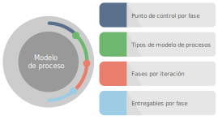
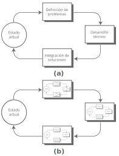
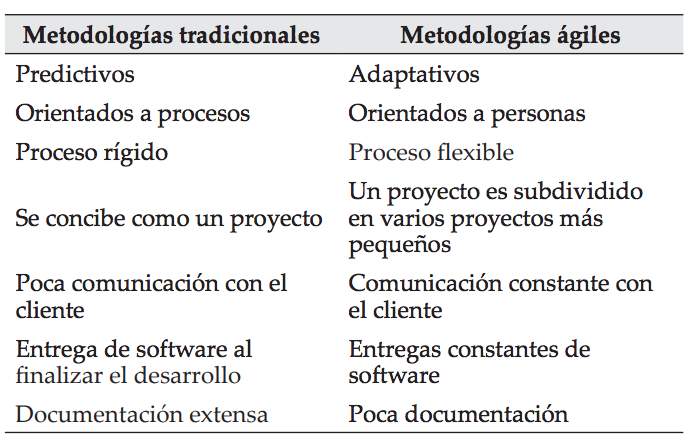
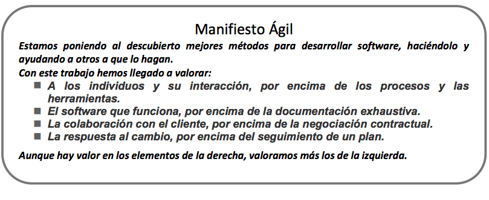
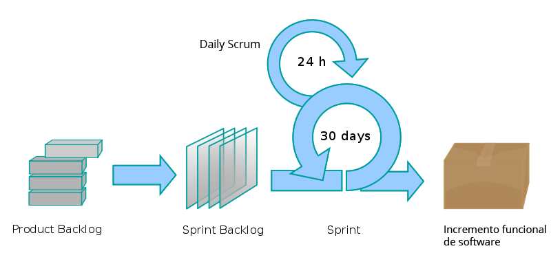
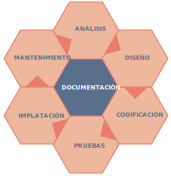
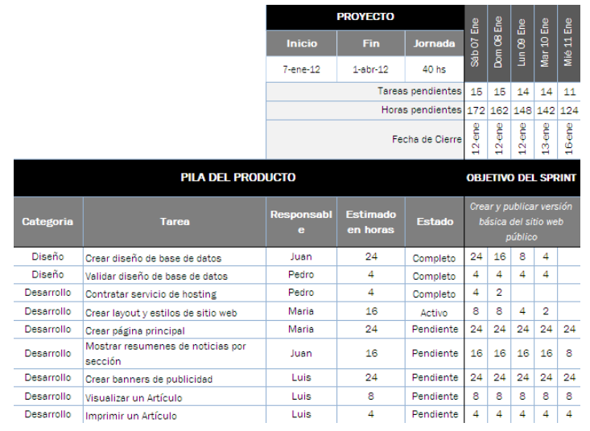

El estudiante conocerá los conceptos y términos básicos de modelos de procesos, donde el equipo de trabajo y
los roles ayudan a la consecución de los objetivos marcados por cada fase, y con esto permitirá llevar de
manera puntual el control de las actividades, así como de homogenizar su concepto, para que de esta manera sea
guía para los involucrados en el desarrollo del proyecto.
Lo que se busca en esta unidad es que el estudiante obtenga los conocimientos necesarios que se requieren para
colaborar en el desarrollo de proyectos bajo las metodologías que ayuden al adecuado desarrollo de proyectos
buscando optimizar los recursos que se otorgan para esta actividad.
“La mayoría de los expertos están de acuerdo en
que la manera más probable para que el mundo se destruya es por accidente. Ahí es donde nosotros entramos;
somos profesionales de la informática, provocamos accidentes.”
Nathaniel Borenstein
Objetivo de
unidad
El estudiante conocerá las fases del ciclo de vida de un proyecto, así como sus puntos de control, con la
finalidad de obtener un desarrollo adecuado del proyecto.
Organizador gráfico de unidad

¡Bienvenidos a esta unidad!
2.1 Tipos de modelos de proceso
En (Pressman, 2002) hace referencia a Howard Baetjer, del concepto de proceso como sigue:
El proceso es el conocimiento incorporado, y puesto que el conocimiento está inicialmente disperso, el
desarrollo del software implícito, latente e incompleto en gran medida es un proceso social de aprendizaje. El
proceso es un diálogo en el que se reúne el conocimiento y se incluye en el software para convertirse en
software. El proceso proporciona una interacción entre los usuarios y los diseñadores, entre los usuarios y
las herramientas de desarrollo, y entre los diseñadores y las herramientas de desarrollo [tecnología]. Es un
proceso interactivo donde la herramienta de desarrollo se usa como medio de comunicación, con cada iteración
del diálogo se obtiene mayor conocimiento de las personas involucradas.
Se define un proceso de software como un marco de trabajo de las tareas que se requieren para construir
software de alta calidad. ¿Es «proceso» sinónimo de ingeniería del software? La respuesta es «sí» y «no». Un
proceso de software define el enfoque que se toma cuando el software es tratado por la ingeniería. Pero la
ingeniería del software también comprende las tecnologías que tiene el proceso -métodos técnicos y
herramientas automatizadas-. Aún más importante es que la ingeniería del software la realizan personas
creativas, con conocimiento, que deberían trabajar dentro de un proceso del software definido y avanzado que
es apropiado para los productos que construyen y para las demandas de su mercado. (Pressman, 2002, pág. 13)
Para resolver los problemas reales de una industria, un ingeniero del software o un equipo de ingenieros debe
incorporar una estrategia de desarrollo que acompañe al proceso, métodos y capas de herramientas y las fases
genéricas. Esta estrategia a menudo se llama modelo de proceso o paradigma de ingeniería del software.
Se selecciona un modelo de proceso para la ingeniería del software según la naturaleza del proyecto y de la
aplicación, los métodos y las herramientas a utilizarse, y los controles y entregas que se requieren. En un
documento intrigante sobre la naturaleza del proceso del software, (Raccoon, 1995) utiliza fractales como base
de estudio de la verdadera naturaleza del proceso del software.
Todo el desarrollo del software se puede caracterizar como bucle de resolución de problemas (Figura 1 a), en
el que se encuentran cuatro etapas distintas: «status quo», definición de problemas, desarrollo técnico e
integración de soluciones. Status quo «representa el estado actual de sucesos» (Raccoon, 1995); la definición
de problemas identifica el problema específico a resolverse; el desarrollo técnico resuelve el problema a
través de la aplicación de alguna tecnología y la integración de soluciones ofrece los resultados (por
ejemplo: documentos, programas, datos, nueva función comercial, nuevo producto) a los que solicitan la
solución en primer lugar.
En realidad, es difícil compartimentar actividades de manera tan nítida como la Figura 1 b da a entender,
porque existen interferencias entre las etapas. Aunque esta visión simplificada lleva a una idea muy
importante: con independencia del modelo de proceso que se seleccione para un proyecto de software, todas las
etapas -status quo, definición de problemas, desarrollo técnico e integración de soluciones- coexisten
simultáneamente en algún nivel de detalle. Dada la naturaleza recursiva de la Figura 1 b, las cuatro etapas
tratadas anteriormente se aplican igualmente al análisis de una aplicación completa y a la generación de un
pequeño segmento de código.

Figura 1. (Pressman, 2002, pág. 19), a) Las fases de un bucle de resolución de
problemas, b) Fases dentro de las fases del bucle de resolución de problemas.
Según (Pressman, 2002), señala los siguientes modelos de procesos, y estos son:
Modelo lineal secuencial
Modelo de construcción de prototipos
Modelo DRA
Modelos evolutivos de proceso del software
Modelo incremental
Modelo espiral
Modelo espiral WINWIN
Modelo de desarrollo concurrente
Desarrollo basado en componentes
Modelo de métodos formales
2.2 Metodologías ágiles
Más conocidas como metodologías de desarrollo de software ligero, son aquellas que buscan cerrar la brecha de
error, y aparecen para quitar los trámites de las ya existentes, por lo que (Navarro, Fernández, &
Morales, 2013), señalan lo siguiente:
Hablar de metodologías ágiles implica hacer referencia a las metodologías de desarrollo de software
tradicionales ya que las primeras surgieron como una reacción a las segundas; sus características principales
son antagónicas y su uso ideal aplica en contextos diferentes, a continuación, se explicarán ambas
metodologías:
Metodologías tradicionales: Las metodologías tradicionales de desarrollo de software son orientadas por
planeación. Inician el desarrollo de un proyecto con un riguroso proceso de licitación de requerimientos,
previo a etapas de análisis y diseño. Con esto tratan de asegurar resultados con alta calidad circunscritos
a un calendario. En las metodologías tradicionales se concibe un solo proyecto, de grandes dimensiones y
estructura definida; se sigue un proceso secuencial en una sola dirección y sin marcha atrás; el proceso es
rígido y no cambia; los requerimientos son acordados de una vez y para todo el proyecto, demandando grandes
plazos de planeación previa y poca comunicación con el cliente una vez ha terminado ésta.
Metodologías Ágiles: Las metodologías ágiles son flexibles, pueden ser modificadas para que se ajusten a
la realidad de cada equipo y proyecto Los proyectos ágiles se subdividen en proyectos más pequeños mediante
una lista ordenada de características. Cada proyecto es tratado de manera independiente y desarrolla un
subconjunto de características durante un periodo de tiempo corto, de entre dos y seis semanas. La
comunicación con el cliente es constante al punto de requerir un representante de él durante el desarrollo.
Los proyectos son altamente colaborativos y se adaptan mejor a los cambios; de hecho, el cambio en los
requerimientos es una característica esperada y deseada, al igual que las entregas constantes al cliente y
la retroalimentación por parte de él. Tanto el producto como el proceso son mejorados frecuentemente.

Figura 2. (Navarro, Fernández, & Morales, 2013), Metodologías tradicionales Vs Metodologías
ágiles.
Es de suma importancia analizar el Manifiesto por el desarrollo ágil como lo menciona (Navarro, Fernández,
& Morales, 2013) y este dice:
Las metodologías ágiles son flexibles, sus proyectos son subdivididos en proyectos más pequeños, incluyen
comunicación constante con el cliente, son altamente colaborativos y se adaptan mejor a los cambios. De hecho,
el cambio en los requerimientos es una característica esperada al igual que las entregas constantes al cliente
y la retroalimentación por parte de él. Tanto el producto como el proceso son mejorados frecuentemente En 2001
se crea el Manifiesto por el desarrollo ágil de software, documento en el que se acuerdan cuatro principios
básicos para el desarrollo de software, que establece prioridades y marca diferencias de fondo frente a los
sistemas tradicionales: individuos e interacciones, por encima de procesos y herramientas; software
funcionando, por encima de documentación extensiva; colaboración con el cliente, por encima de negociación
contractual; y respuesta ante el cambio, por encima de seguir un plan.
Los principios que dan origen al manifiesto implican la satisfacción del cliente mediante entregas tempranas
y continuas de software que funcione; requerimientos cambiantes en cualquier etapa del proyecto; participación
activa del cliente; simplicidad; equipos de desarrollo motivados y auto-organizados; comunicación efectiva;
auto inspecciones; y adaptación.
El manifiesto por el desarrollo ágil de software es el resultado del trabajo colaborativo de un grupo formado
por diecisiete personas, entre desarrolladores de software, escritores y consultores, quienes lo construyeron
y suscribieron en 2001. La firma y publicación del Manifiesto en ese año no implica que esa sea la fecha de
origen de las metodologías ágiles o que antes de ese año no existieran, sino el reconocimiento de la necesidad
−y la expresión− de un lineamiento común capaz de hacer posible algún tipo de agrupación entre ellas.
Las metodologías ágiles se caracterizan por el desarrollo iterativo e incremental; la simplicidad de la
implementación; las entregas frecuentes; la priorización de los requerimientos o características a desarrollar
a cargo del cliente; y la cooperación entre desarrolladores y clientes. Las metodologías ágiles dan como un
hecho que los requerimientos van a cambiar durante el proceso de desarrollo. (Navarro, Fernández, &
Morales, 2013, págs. 31 -32)

Figura 3. (Menzinsky & Gertrudis, 2016, pág. 10) Manifiesto Ágil.Para ver completo “El manifiesto ágil” direcciónese a la siguiente dirección: https://agilemanifesto.org/iso/es/principles.html
(Navarro, Fernández, & Morales, 2013), menciona algunas metodologías agiles representativas como lo son:
Scrum: Su nombre no corresponde a una sigla, sino a un concepto deportivo, propio del rugby, relacionado
con la formación requerida para la recuperación rápida del juego ante una infracción menor. Su primera
referencia en el contexto de desarrollo data de 1986, cuando Takeuchi y Nonaka utilizan el Rugby Approach
para definir un nuevo enfoque en el desarrollo de productos, dirigido a incrementar su flexibilidad y
rapidez, a partir de la integración de un equipo interdisciplinario y múltiples fases que se traslapan entre
sí. La metodología Scrum para el desarrollo ágil de software es un marco de trabajo diseñado para lograr la
colaboración eficaz de equipos en proyectos, que emplea un conjunto de reglas y artefactos y define roles
que generan la estructura necesaria para su correcto funcionamiento.
Scrum utiliza un enfoque incremental que tiene como fundamento la teoría de control empírico de procesos.
Esta teoría se fundamenta en transparencia, inspección y adaptación; la transparencia, que garantiza la
visibilidad en el proceso de las cosas que pueden afectar el resultado; la inspección, que ayuda a detectar
variaciones indeseables en el proceso; y la adaptación, que realiza los ajustes pertinentes para minimizar el
impacto de las mismas.
Los llamados Equipos Scrum son auto-gestionados, multifuncionales y trabajan en iteraciones. La autogestión
les permite elegir la mejor forma de hacer el trabajo, en vez de tener que seguir lineamientos de personas que
no pertenecen al equipo y carecen de contexto. Los integrantes del equipo tienen todos los conocimientos
necesarios (por ser multifuncionales) para llevar a cabo el trabajo. La entrega del producto se hace en
iteraciones; cada iteración crea nuevas funcionalidades o modifica las que el dueño del producto requiera.
Scrum define tres roles: el Scrum master, el dueño del producto y el equipo de desarrollo. El Scrum master
tiene como función asegurar que el equipo está adoptando la metodología, sus prácticas, valores y normas; es
el líder del equipo, pero no gestiona el desarrollo. El dueño del producto es una sola persona y representa a
los interesados, es el responsable de maximizar el valor del producto y el trabajo del equipo de desarrollo;
tiene entre sus funciones gestionar la lista ordenada de funcionalidades requeridas o Product Backlog. El
equipo de desarrollo, por su parte, tiene como responsabilidad convertir lo que el cliente quiere, el Product
Backlog, en iteraciones funcionales del producto; el equipo de desarrollo no tiene jerarquías, todos sus
miembros tienen el mismo nivel y cargo: desarrollador. El tamaño óptimo del equipo está entre tres y nueve
personas. Scrum define un evento principal o Sprint (Figura 3) que corresponde a una ventana de tiempo donde
se crea una versión utilizable del producto (incremento). Cada Sprint, como en el rugby, es considerado como
un proyecto independiente. Su duración máxima es de un mes. Un Sprint se compone de los siguientes elementos:
reunión de planeación del Sprint, Daily Scrum, trabajo de desarrollo, revisión del Sprint y retrospectiva del
Sprint.

Figura 4. (Navarro, Fernández, & Morales, 2013), Metodologías Scrum: fases de un Sprint.
Da clic en cada uno de los títulos
para obtener más información.
Es la metodología ágil más conocida. Fue desarrollada por Kent Beck buscando guiar equipos de
desarrollo de software pequeños o medianos, entre dos y diez desarrolladores, en ambientes de
requerimientos imprecisos o cambiantes. XP tiene como base cinco valores: Simplicidad,
Comunicación, Retroalimentación, Respeto y Coraje. Estos valores, a su vez, son la base para la
definición de sus principios. De ellos, los fundamentales son: la retroalimentación rápida, asumir
simplicidad, el cambio incremental, la aceptación del cambio y el trabajo de calidad. Las
prácticas de esta metodología se derivan de sus valores y principios y están enfocadas en darle
solución a las actividades básicas de un proceso de desarrollo, esto es: escribir código, realizar
pruebas, escuchar (planear) y diseñar. Las prácticas de XP incluyen: planning game, pequeñas
entregas, diseño simple, programación en pareja, pruebas, refactoring, integración continua,
propiedad común del código, paso sostenible, cliente en sitio, metáfora y estándares de código
Crystal
La familia de metodologías Crystal se basa en los conceptos de Rational Unified Process [RUP] y
está compuesta por Crystal Clear, Crystal Yellow, Crystal Orange y Crystal Red; el nivel de
opacidad del color en el nombre indica un mayor número de personas implicadas en el desarrollo, un
mayor tamaño del proyecto y, por lo tanto, la necesidad de mayor control en el proceso. La
filosofía de Crystal define el desarrollo como un juego cooperativo de invención y comunicación
cuya meta principal es entregar software útil, que funcione, y su objetivo secundario, preparar el
próximo juego. Los valores compartidos por los miembros de la familia Crystal están centrados en
las personas y en la comunicación. Sus principios indican que: el equipo puede reducir trabajo
intermedio en la medida que produce código con mayor frecuencia y utiliza mejores canales de
comunicación entre las personas; los proyectos evolucionan distinto con el tiempo por lo que las
convenciones que el equipo adopta tienen que adecuarse y evolucionar; los cambios en el cuello de
botella del sistema determinan el uso de trabajo repetido; y el afinamiento se realiza sobre la
marcha.
Método de desarrollo de sistemas dinámicos (Dynamic Systems Development Method - DSDM)
DSDM es un marco de trabajo creado para entregar la solución correcta en el momento correcto.
Utiliza un ciclo de vida iterativo, fragmenta el proyecto en periodos cortos de tiempo y define
entregables para cada uno de estos periodos. Tiene roles claramente definidos y especifica su
trabajo dentro de periodos de tiempo. El Consorcio DSDM es el responsable del mantenimiento de
esta metodología. Su versión actual es DSDM Atern. Los principios de DSDM son: la necesidad del
negocio como eje central; las entregas a tiempo; la colaboración; nunca comprometer la calidad;
construir de modo incremental sobre una base sólida; el desarrollo iterativo; la comunicación
clara y continua; y la demostración de control.
Desarrollo adaptativo de software (Adaptative Software Development - ASD)
ASD tiene como fundamento la teoría de sistemas adaptativos complejos. Por ello, interpreta los
proyectos de software como sistemas adaptativos complejos compuestos por agentes −los
interesados−, entornos −organizacional, tecnológico− y salidas −el producto desarrollado El ciclo
de vida de ASD está orientado al cambio y se compone de las fases: especulación, colaboración y
aprendizaje. Estas fases se caracterizan por estar enfocadas en la misión, estar basadas en
características, ser iterativas, tener marcos de tiempo especificados, ser orientadas por los
riesgos y ser tolerantes a los cambios.
Desarrollo orientado a funcionalidades (Feature-Driven Development - FDD)
FDD tiene como rasgo característico la planeación y el diseño por adelantado. En consecuencia, el
modelo de objetos, la lista de características y la planeación se hacen al inicio del proyecto.
Las iteraciones son incrementos con características identificadas. Las prácticas que FDD pregona
son: el modelado de objetos de dominio (domain object modeling), el desarrollo por
características, Class (code) ownership, los equipos de características o Feature Teams, las
inspecciones, la construcción regular de planificación (Regular Build Schedule), la gestión de
configuración y los reportes y visibilidad de los resultados. Su ciclo de vida está compuesto por
cinco etapas: el desarrollo de un modelo general, la construcción de la lista de características,
la planeación por característica, el diseño por característica y la construcción por
característica. (Navarro, Fernández, & Morales, 2013, págs. 35 -36)
2.3 Fases de iteración
En general, todas las metodologías incluyen las siguientes fases, por lo que (Espinoza E. , 2021), describe
las fases de la siguiente manera:
Da clic en cada uno de los títulos
para obtener más información.
Esta actividad facilita al desarrollador de sistemas especificar la función y comportamiento de los
programas, así como indicar la interfaz con otros elementos del sistema.
Es el proceso de mejora y optimización del software después de su entrega al usuario final, así
como también corrección y prevención de los defectos.
Y todas las fases aportan productos a la documentación final de proyecto.

Figura 5. Elaboración propia, Fases de un proyecto.
En el punto de documentación, de un proyecto de software es importante porque permite conservar la historia,
facilita la utilización por parte del usuario, garantiza la permanencia y disminuye los costos de operación y
de ejecución del proyecto como tal, y la documentación incluye:
Análisis de requerimientos
Algoritmos obtenidos en el diseño
Códigos comentados
Resultados de las pruebas
Manuales de uso entre otros
La siguiente imagen muestra, los errores que ocurrirán cuando hay nula comunicación entre los miembros del
equipo.
Figura 6. (Espinoza E. , 2021), Fases en el desarrollo de proyectos con nula comunicación.
De la misma manera se analizará la gestión ágil de proyectos con Scrum, para mejor comprensión de las
iteraciones, lo cual dice según (Menzinsky & Gertrudis, 2016):
Se comienza con la visión general del resultado que se desea, y a partir de ella se especifica y da detalle a
las funcionalidades que se desean obtener en primer lugar.
Cada ciclo de desarrollo o iteración (sprint) finaliza con la entrega de una parte operativa del producto
(incremento). La duración de cada sprint puede ser desde una, hasta seis semanas, aunque se recomienda que no
exceda de un mes.
En scrum, el equipo monitoriza la evolución de cada sprint en reuniones breves diarias donde se revisa en
conjunto el trabajo realizado por cada miembro el día anterior, y el previsto para el día actual. Estas
reuniones diarias son de tiempo cerrado de 5 a 15 minutos máximo, se realizan de pie junto a un tablero o
pizarra con información de las tareas del sprint, y el trabajo pendiente en cada una. Esta reunión se denomina
“reunión de pie” o “scrum diario” y si se emplea la terminología inglesa: “stand-up meeting”, también: “daily
scrum” o “morning rollcall”.
Scrum maneja de forma empírica la evolución del proyecto con las siguientes tácticas:
Da clic en cada uno de los títulos
para obtener más información.
Al finalizar cada sprint se revisa funcionalmente el resultado, con todos los implicados en el
proyecto. Es por tanto la duración del sprint, el período de tiempo máximo para descubrir
planteamientos erróneos, mejorables o malinterpretaciones en las funcionalidades del producto.
Desarrollo incremental
No se trabaja con diseños o abstracciones. El desarrollo incremental ofrece al final de cada
iteración una parte de producto operativa, que se puede usar, inspeccionar y evaluar. Scrum
resulta adecuado en proyectos con requisitos inciertos y, o inestables. ¿Por qué predecir la
versión definitiva de algo que va a estar evolucionando de forma continua? Scrum considera a la
inestabilidad como una premisa, y adopta técnicas de trabajo para facilitar la evolución sin
degradar la calidad de la arquitectura y permitir que también evolucione durante el desarrollo.
Durante la construcción se depura el diseño y la arquitectura, y no se cierran en una primera fase
del proyecto. Las distintas fases que el desarrollo en cascada realiza de forma secuencial, en
scrum se solapan y realizan de forma continua y simultánea.
Auto organización
Son muchos los factores impredecibles en un proyecto. La gestión predictiva asigna al rol de
gestor del proyecto la responsabilidad de su gestión y resolución. En scrum los equipos son auto
organizados, con un ámbito de decisión suficiente para adoptarlas resoluciones que consideren
oportunas.
Colaboración
Es un componente importante y necesario para que a través de la auto organización se pueda
gestionar con solvencia la labor que de otra forma realizaría un gestor de proyectos. Todos los
miembros del equipo colaboran de forma abierta con los demás, según sus capacidades y no según su
rol o su puesto. (Menzinsky & Gertrudis, 2016, págs. 16 -17)
El marco técnico de scrum está formado por:
Roles:
El equipo scrum
El dueño del producto
El Scrum Master
Artefactos:
Pila del producto
Pila del sprint
Incremento
Eventos:
Sprint
Reunión de planificación del sprint
Scrum diario
Revisión del sprint
Retrospectiva del sprint
Y la pieza clave es el sprint. Se denomina sprint a cada ciclo o iteración de trabajo que produce una parte
del producto terminada y funcionalmente operativa (incremento).
Al tratar scrum avanzado, las implementaciones más flexibles de scrum pueden adoptar dos tácticas diferentes
para mantener un avance continuo en el proyecto:
Incremento iterativo: basado en pulsos de tiempo prefijado (timeboxing).
Incremento continuo: basado en el mantenimiento de un flujo continuo, no marcado por pulsos o sprints.
Scrum técnico trabaja con pulsos de tiempo prefijado que se denominan sprints. Emplea por tanto incremento
iterativo para mantener un ritmo de avance constante.
Pila del producto: (product backlog) lista de requisitos de usuario, que a partir de la visión inicial del
producto crece y evoluciona durante el desarrollo.
Pila del sprint: (sprint backlog) lista de los trabajos que debe realizar el equipo durante el sprint para
generar el incremento previsto.
Otro artefacto propio del modelo estándar de scrum es el gráfico de avance o gráfico burn down que el equipo
actualiza a diario para comprobar el avance. Este elemento, junto con la práctica de estimación de póquer y el
gráfico de producto o burn up.
Pila del producto y pila del sprint: los requisitos en desarrollo ágil.
En la ingeniería de software tradicional, los requisitos del sistema forman parte del proceso de adquisición,
siendo por tanto responsabilidad del cliente la definición del problema y de las funcionalidades que debe
aportar la solución.
No importa si se trata de gestión tradicional o ágil. La pila del producto es responsabilidad del cliente,
aunque se aborda de forma diferente en cada caso:
En los proyectos predictivos, los requisitos del sistema suelen especificarse en documentos formales;
mientras que en los proyectos ágiles toman la forma de pila del producto o lista de historias de usuario.
Los requisitos del sistema formales se especifican de forma completa y cerrada al inicio del proyecto; sin
embargo, una pila del producto es un documento vivo, que evoluciona durante el desarrollo.
Los requisitos del sistema los desarrolla una persona o equipo especializado en ingeniería de requisitos a
través del proceso de obtención (elicitación) con el cliente. En scrum el cliente (propietario del producto)
comparte su visión con todo el equipo, y la pila del producto se realiza y evoluciona de forma continua con
los aportes de todos.
Scrum, emplea dos formatos para registrar los requisitos:
Pila del producto (Product Backlog)
Pila del sprint (Sprint Backlog)
La pila del producto registra los requisitos vistos desde el punto de vista del cliente. Un enfoque similar
al de los requisitos del sistema o “ConOps” de la ingeniería de software tradicional. Está formada por la
lista de funcionalidades o "historias de usuario" que desea obtener el cliente, ordenadas por la prioridad que
el mismo da a cada una. Consideremos que cada historia debe de aportar valor (que es lo que se va a obtener de
ella), al sistema si no aporta nada no se pone.
La pila del sprint refleja los requisitos vistos desde el punto de vista del equipo de desarrollo. Está
formada por la lista de tareas en las que se descomponen las historias de usuario que se van a llevar a cabo
en el sprint.
En el desarrollo y mantenimiento de la pila del producto lo relevante no es tanto el formato, sino el que:
Las historias de usuario que incluye den forma a una visión del producto definida y conocida por todo el
equipo.
Las historias de usuario estén individualmente definidas, priorizadas y pre estimadas.
Esté realizada y gestionada por el cliente (propietario del producto).
Ahora bien, la pila del sprint (sprint Backlog) es la lista de las tareas necesarias para construir las
historias de usuario que se van a realizar en un sprint.
La confecciona el equipo en la reunión de planificación del sprint, indicando para cada tarea el esfuerzo
previsto para realizarla. Para calcular el esfuerzo de cada tarea (en puntos o tiempo ideal) es habitual
emplear técnicas como la estimación de póquer.
La pila del sprint descompone las historias de usuario en unidades de tamaño adecuado para monitorizar el
avance a diario, e identificar riesgos y problemas sin necesidad de procesos de gestión complejos.
Es también una herramienta para la comunicación visual directa del equipo.
Condiciones:
Realizada de forma conjunta por todos los miembros del equipo.
Cubre todas las tareas identificadas por el equipo para conseguir el objetivo del sprint.
Sólo el equipo la puede modificar durante el sprint.
Las tareas demasiado grandes deben descomponerse en otras más péquelas.
En ningún caso una tarea puede tener un tamaño tal que necesite más de un día de trabajo.
Es visible para todo el equipo. Idealmente en un tablero o pared en el mismo espacio físico donde trabaja
el equipo.
Formato y soporte
Son soportes habituales:
Tablero físico o pared y digital
Hoja de cálculo
Herramienta colaborativa o de gestión de proyectos
Y sobre el más adecuado a las características del proyecto, oficina y equipo, lo apropiado es diseñar el
formato más cómodo para todos, teniendo en cuenta los siguientes criterios:
Incluir la siguiente información: Pila del sprint, persona responsable de cada tarea, estado en el que se
encuentra y tiempo de trabajo que queda para completarla.
Incluir sólo la información estrictamente necesaria.
Debe servir de medio para registrar en cada reunión diaria del sprint, el tiempo que le queda a cada
tarea.
Facilitar la consulta y la comunicación diaria y directa del equipo.

Figura 9. (Menzinsky & Gertrudis, 2016, pág. 25), Ejemplo de pila de sprint con hoja de
cálculo.
Durante el sprint, el equipo actualiza a diario en ella los tiempos pendientes de cada tarea. Al mismo
tiempo, con estos datos traza el gráfico de avance o trabajo consumido (burn-down), que se describe más
adelante, en el capítulo de métricas ágiles (Menzinsky & Gertrudis, 2016, págs. 18 - 25)
2.4 Entregables por fase
Dentro de la metodología ágil el incremento forma parte medular para la entrega de productos producidos, por
lo que (Menzinsky & Gertrudis, 2016), menciona lo siguiente:
El incremento es la parte de producto producida en un sprint, y tiene como característica el estar
completamente terminada y operativa, en condiciones de ser entregada al cliente. No se deben considerar como
Incremento a prototipos, módulos o sub-módulos, ni partes pendientes de pruebas o integración.
Idealmente en Scrum:
Cada elemento de la pila del producto se refiere a funcionalidades entregables, no a trabajos internos del
tipo “diseño de la base de datos”.
Se produce un “incremento” en cada iteración.
Sin embargo, es una excepción frecuente el primer sprint, que se suele denominar “sprint 0”. Cuando tiene
objetivos del tipo “contrastar la plataforma y el diseño” que resultan necesarios al comenzar algunos
proyectos, e implican trabajos de diseño o desarrollo de prototipos para contrastar las expectativas de la
plataforma o tecnología que se va a emplear. Teniendo en cuenta esta excepción habitual:
Incremento es la parte de producto realizada en un sprint potencialmente entregable:
terminada y probada.
Si el proyecto o el sistema requiere documentación, o procesos de validación y verificación documentados, o
con niveles de independencia que implican procesos con terceros, éstos también tienen que estar realizados
para considerar que el incremento está “hecho”.
¿Qué se entregará al terminar el sprint?
Como primera parte el propietario del producto presenta la pila del producto, exponiendo las
historias de usuario de mayor prioridad que necesita y que prevé que se podrán desarrollar en el siguiente
sprint. Si la pila del producto ha tenido cambios significativos desde la anterior reunión, explica las causas
que los han ocasionado.
El objetivo es que todo el equipo conozca las razones y los detalles con el nivel suficiente
para comprender el trabajo del sprint.
Propietario del producto (Esto es lo que se plasmaría en el proyecto):
Presenta las historias de usuario de la pila del producto que tienen mayor prioridad y que estima que se
pueden realizar en el sprint.
La presentación se hace con un nivel de detalle suficiente para transmitir al equipo toda la información
necesaria para construir el incremento.
El equipo (Se recomienda que las preguntas y propuestas se le presenten al profesor y deberá resolverlas
según su criterio):
Realiza las preguntas y solicita las aclaraciones necesarias.
Propone sugerencias, modificaciones y soluciones alternativas.
Lo siguiente lo realiza el estudiante, además deberá de plasmarlo en el documento:
Los aportes del equipo pueden suponer modificaciones en la pila. Esta reunión es un punto caliente de scrum
para favorecer la fertilización cruzada de ideas en equipo y añadir valor a la visión del producto. Tras
reordenar y replantear las historias de la pila del producto, el equipo define el “objetivo del sprint,” o
frase que sintetiza cuál es el valor que se le va a entregar al cliente. Exceptuando sprints dedicados a
colecciones de tareas desordenadas, la elaboración de este lema de forma conjunta en la reunión es una
garantía de que todo el equipo comprende y comparte la finalidad del trabajo, y durante el sprint sirve de
criterio de referencia en las decisiones que autogestiona el equipo.
Y como segunda parte el equipo desglosa cada funcionalidad en tareas, y estima el esfuerzo para cada una de
ellas, componiendo así las tareas que forman la pila del sprint. En este desglose, el equipo tiene en cuenta
los elementos de diseño y arquitectura que deberá incorporar el sistema. Los miembros del equipo establecen
cuáles van a ser las tareas para los primeros días del sprint, y se las autoasignan tomando como criterios sus
conocimientos, intereses y una distribución homogénea del trabajo.
Esta segunda parte debe considerarse como una “reunión del equipo”, en la que deben estar todos sus miembros,
y ser ellos quienes descompongan estimen y asignen el trabajo. El papel del propietario del producto es
atender a dudas y comprobar que el equipo comprende y comparte su objetivo.
2.5 Punto de control por fase
Cierre de unidad
En esta unidad se conoce el concepto de proceso, así como algunos de sus tipos y de metodologías que nos
ayudan a llevar el desarrollo de un proyecto, de igual manera que función tienen las fases dentro de un
proyecto determinado, y los requisitos que deben de contener los entregables; y los puntos de control que se
deben de considerar, con la finalidad de conseguir la culminación de cada una de las etapas de nuestro
proyecto.
El desarrollo de esta unidad nos permitirá conocer las actividades y tareas que se estarán llevando a cabo,
durante el periodo que dure el proyecto, y con esta información podremos identificar, determinar y gestionar
el recurso que se ocupara para concluir con el proyecto, mismo que es importante para la toma de decisiones.
Fuentes de
consulta
Espinoza, A. (02 de 2013). Universidad de Piura. Obtenido de
https://pirhua.udep.edu.pe/bitstream/handle/11042/2747/ING_521.pdf?sequence
Espinoza, E. (23 de 02 de 2021). DICyG - UNAM. Obtenido de
http://dicyg.fi-c.unam.mx:8080/lalo/aed/fases
Menzinsky, A., & Gertrudis, J. (2016). Scrum Manager. Obtenido de
https://www.scrummanager.net/files/sm_proyecto.pdf
Navarro, A., Fernández, J., & Morales, J. (2013). Revisión de metodologías ágiles para el desarrollo
de software. Obtenido de https://www.redalyc.org/articulo.oa?id=496250736004
Pressman, R. (2002). Ingeniería del software. México: Mc Graw Hill.
Raccoon, L. (1995). The Chaos Model and the Chaos Vol. 20. ACM Software Engineering Notes, 55 - 66.
 Presentación de unidad
Presentación de unidad Objetivo de
unidad
Objetivo de
unidad Da clic en cada uno de los títulos
para obtener más información.
Da clic en cada uno de los títulos
para obtener más información.
 Fuentes de
consulta
Fuentes de
consulta